Build an AI Agent with Bob
From an empty laptop to a working event-planning agent — you'll install everything, let Bob write three tools, and watch an AI decide when to use them. No experience needed. We'll go one small step at a time.
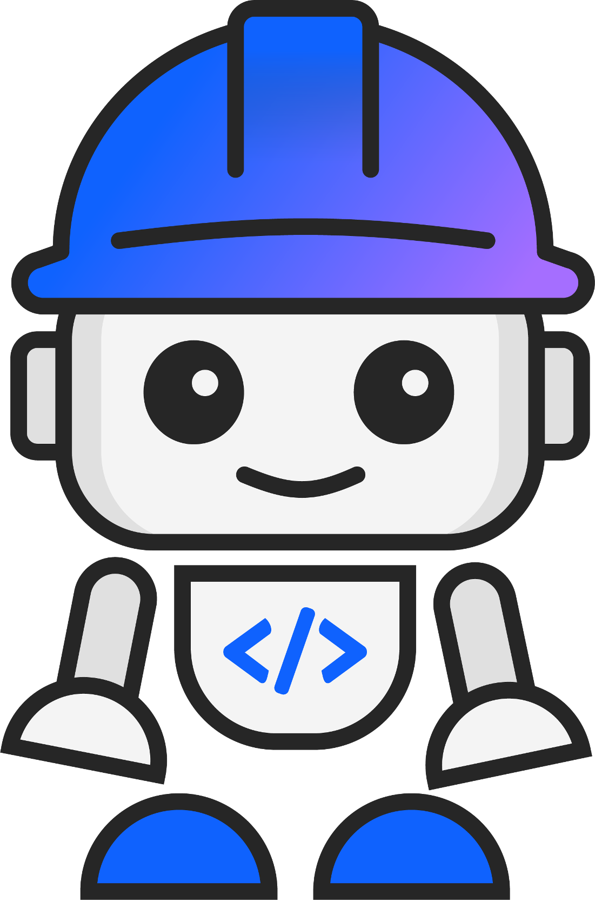
Pick your operating system in the top-right (macOS, Windows, or Linux). Every command on this page updates to match, so you'll only ever see the steps that apply to you.
How to read this guide
Every section is a numbered checklist. Do the blue numbered steps in order — that's the whole path. You'll finish each section on a green ✓ checkpoint that tells you exactly what "done" looks like.
Sometimes you'll see a grey “⚠ Only if…” bar. That's a fix for a problem you probably won't hit. Ignore it unless it describes what's happening on your screen — then click it to expand.
What you need
- A laptop you can install software on, and internet.
- An IBM ID (your instructor will confirm how to sign in to Bob).
- A watsonx Orchestrate API key + URL — your instructor hands these out in Step 7. You don't make your own.
Raise a hand — 5 helpers are walking the room. And once Bob is installed, you can ask Bob itself for help right inside the app.
Install Python
Python is the programming language our agent toolkit is built on, so it has to go on your computer first. We want version 3.12. Follow the numbered steps — we'll even check whether you already have it.
-
1
Open your terminal
The terminal is a window where you type commands. Here's how to open it:
macOSPress Cmd+Space, type Terminal, and press Enter. A small window opens — that's it.
WindowsClick the Start menu, type PowerShell, and click Windows PowerShell. A blue window opens — that's your terminal.
LinuxPress Ctrl+Alt+T, or open the Terminal app from your applications.
-
2
Check if you already have Python
Type this into the terminal and press Enter:
python3 --versionpython3 --versionpython --versionIf it prints
Python 3.11,3.12, or3.13(any of those), you're already done — skip to Step 02, Install IBM Bob. If you get an error or an older version, keep going. -
3
Download Python 3.12macOS
Go to python.org/downloads and click the big yellow “Download Python 3.12” button at the top. It saves a
.pkgfile to your Downloads.WindowsGo to python.org/downloads and click the big yellow “Download Python 3.12” button at the top. It saves a
.exefile to your Downloads.Linux (Ubuntu / Debian)You'll install from the terminal instead of a website. Run these two commands:
sudo apt update sudo apt install python3.12 python3.12-venv python3-pipType your password if asked (you won't see it as you type — that's normal), then press Enter. On Fedora, use
sudo dnf install python3.12instead. Then skip to the ✓ checkpoint below. -
4
Run the installermacOS
Open the downloaded
.pkgfile. Click Continue a few times, then Agree, then Install. Enter your Mac password when asked, and wait for “The installation was successful.” Click Close.WindowsOpen the downloaded
.exefile. The installer window appears.Don't skip this checkboxAt the bottom of the very first screen, tick “Add python.exe to PATH”. This one checkbox prevents the most common problem people hit. Then click Install Now and wait for it to finish.
LinuxNothing to do here — the commands in Step 3 already installed Python. Continue to the checkpoint.
-
✓
Checkpoint — Python is installed
Open a brand-new terminal window (close the old one first — this makes your computer notice the change) and run the version command again:
python3 --versionpython3 --versionpython --versionYou should see Python 3.11, 3.12, or 3.13. If you do — you're ready for the next step.
▶⚠ Only if typing python opens the Microsoft Store
Windows sometimes ships a placeholder that hijacks the command. Turn it off: open Settings → Apps → Advanced app settings → App execution aliases, then toggle off the two entries named python.exe and python3.exe. Open a new terminal and try the version command again.
▶⚠ Only if the version command still fails after installing
Make sure you opened a new terminal window after installing. If it still fails, the installer includes an “Install Certificates” and “Update Shell Profile” script in Applications → Python 3.12 — double-click Update Shell Profile.command, then open a new terminal.
▶⚠ Only if the check still shows an older version (like 3.9)
Installing 3.12 does not remove your old Python — both live side by side, which is totally fine. A brand-new terminal usually picks the newest one. If python3 --version still shows the old version (common if you also have Homebrew Python), just call 3.12 by name to confirm it's there:
python3.12 --versionIf that prints Python 3.12.x, you're fine — but use python3.12 in place of python3 when you create the virtual environment in Step 04. The venv locks in whichever version you use, so everything after that just works.
▶⚠ Only if the check still shows an older version (like 3.9)
Installing 3.12 does not remove your old Python — you now have both. Usually a brand-new terminal picks the newest. If it still shows the old one, you most likely didn't tick “Add python.exe to PATH” — re-run the installer and tick it. Either way, you can always call 3.12 directly with the Python launcher:
py -3.12 --versionIf that prints Python 3.12.x, use py -3.12 in place of python when you create the virtual environment in Step 04. The venv locks in that version, so the rest of the workshop just works.
▶⚠ Only if the check still shows an older version
Your distro's default python3 may point at an older version — that's fine, the 3.12 you just installed lives alongside it. Call it by name to confirm, and use python3.12 when you create the virtual environment in Step 04:
python3.12 --versionInstall IBM Bob
Bob is IBM's AI-powered code editor. It's where you'll write files, run commands, and get an AI assistant that can help you as you go. Download it from bob.ibm.com/download.
-
1
Download BobmacOS
On bob.ibm.com/download, choose the macOS download. It saves a
.dmgfile.WindowsOn bob.ibm.com/download, choose the Windows download. It saves an
.exeinstaller.LinuxOn bob.ibm.com/download, choose the Linux download (
.debor AppImage). -
2
Install and open itmacOS
Open the
.dmg, then drag the Bob icon onto the Applications folder shown in the window. Open Bob from Applications. If macOS warns you, right-click the app and choose Open.WindowsRun the
.exeand click through the installer. When it finishes, open Bob from the Start menu.LinuxFor a
.deb: runsudo dpkg -i <file>.deb. For an AppImage: right-click → Properties → allow executing, then double-click it. -
3
Sign in with your IBM ID
When Bob opens, sign in with your IBM ID. You must be signed in for Bob's AI features to work. Your instructor will confirm which account to use.
-
4
Find the 3 things you'll use all workshop
- Chat panel — where you talk to Bob, your AI helper.
- Terminal — open it from the menu: Terminal → New Terminal. This is where you'll run commands from now on.
- Command Palette — press Cmd+Shift+PCtrl+Shift+PCtrl+Shift+P. It lets you run any built-in command by typing its name.
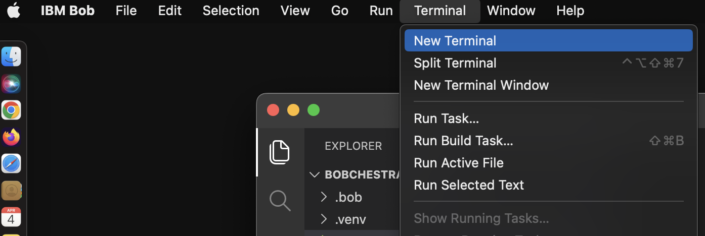
Opening a terminal in Bob: Terminal → New Terminal. This is where you'll run commands throughout the workshop. -
✓
Checkpoint — Bob is ready
Bob is open, you're signed in with your IBM ID, and you can open a terminal with Terminal → New Terminal.
You'll split the work two ways, and it's worth knowing why:
Bob writes your files. When you need a file — a tool, the agent, a config file — just describe it in Bob's chat and let Bob create it for you. That's the whole point of an AI editor: you shouldn't type code from scratch.
You run the commands yourself in Bob's terminal (installing, connecting, testing). Bob runs code in its own protected sandbox, so anything that changes your computer's setup or logs you in has to be run by you in the terminal to actually take effect. We'll point out which is which as we go.
Bob is your AI pair-programmer. Specific asks work far better than vague ones:
- Do: “Create a Python tool that estimates an event budget from a guest count and event type.”
- Do: “This
orchestratecommand failed with this error — what's wrong?” (paste the red text) - Avoid: “Fix this”, “make it work”, or “do everything for me” — too little to go on.
Starting something unrelated? Click Start New Task in Bob's chat so old context doesn't confuse it. Keep related work in one chat.
Set up your project folder
Everything you build lives in one folder. You'll create it straight from Bob's menus — just like VS Code, no terminal commands — then open a terminal for the steps that follow. If you set up Python and Bob before today, this is where you start, so we'll go slowly and assume nothing is open yet.
When Bob launches you'll land on a Welcome tab. The important parts of the window:
- Left edge — a thin strip of icons (Explorer, Search, Extensions…). The top one, Explorer, is your file panel. It says “You have not yet opened a folder” until you open one — that's normal.
- Chat panel — Bob, your AI helper, usually docked on the right (or open it from the Bob icon).
- Bottom bar — the status bar. The Terminal opens as a panel across the bottom.
Bob is built on the same layout as VS Code, so if you've seen that, this will feel familiar.
-
1
Create your project folder — no terminal needed
You'll make the folder the same way you would in VS Code: through the menus. From the top menu choose File → Open Folder…. Your computer's file picker opens.
In that picker, click the New Folder button (macOS & Windows say New Folder; Linux says Create Folder), name it exactly:
event-planner-wsThen select that new folder and click Open. This creates the folder and opens it in Bob in one go — no typing commands.
Use no spaces in the nameStick with hyphens like
event-planner-ws. A folder name with spaces (or a parent folder with spaces) will break the toolkit later. -
2
Trust the folder
The first time Bob opens a folder it asks whether you trust it. Click Yes, I trust the authors — it's your own empty folder.
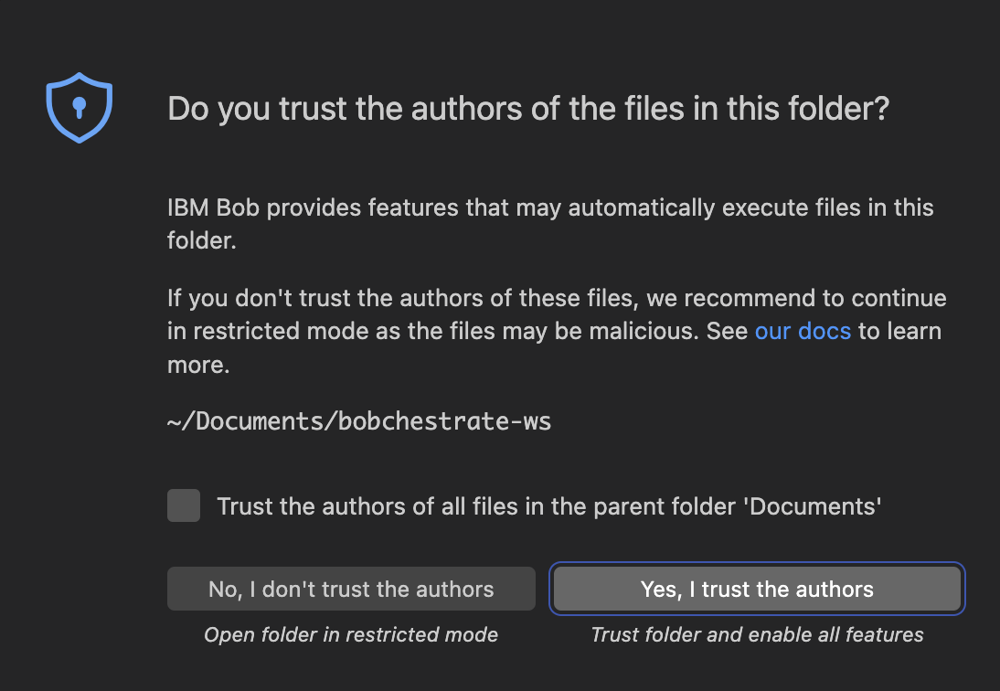
Click Yes, I trust the authors when this appears. (The screenshot shows a different folder name — you'll see event-planner-ws.) Your new folder now shows in the left-hand Explorer panel. It's empty — that's exactly right.
-
3
Open a terminal inside Bob
You'll need a terminal for the next steps. From the top menu choose Terminal → New Terminal. A command panel opens across the bottom of the window — and because your folder is already open, it starts inside
event-planner-wsautomatically. Use this terminal, not your computer's separate Terminal/PowerShell app.Opening a terminal in Bob: Terminal → New Terminal. It appears docked at the bottom of the window. -
✓
Checkpoint — project is open
The empty event-planner-ws folder is open in Bob and shows in the left-hand Explorer panel, and you have a terminal open at the bottom.
Create a virtual environment
A virtual environment is a private sandbox for this project's Python packages, so what we install here never messes with anything else on your computer. We'll make one called .venv — just two commands, typed in the terminal (not Bob's chat).
-
1
Create the sandbox
python3 -m venv .venvpython3 -m venv .venvpython -m venv .venv -
2
Turn it on (activate it)
source .venv/bin/activatesource .venv/bin/activate.venv\Scripts\Activate.ps1 -
✓
Checkpoint — sandbox active
Your terminal prompt now starts with
(.venv). That means the sandbox is on. Every new terminal you open in Bob will turn it on automatically.
▶⚠ Only if PowerShell says running scripts is disabled
Run this command once, then try the activate command from Step 2 again:
Set-ExecutionPolicy -ExecutionPolicy RemoteSigned -Scope CurrentUser▶💡 Shortcut let Bob create the environment for you
Instead of the terminal, you can open the Command Palette (Cmd+Shift+PCtrl+Shift+PCtrl+Shift+P), type “Python: Create Environment”, choose Venv, and pick your Python 3.12. Bob builds and activates .venv for you.
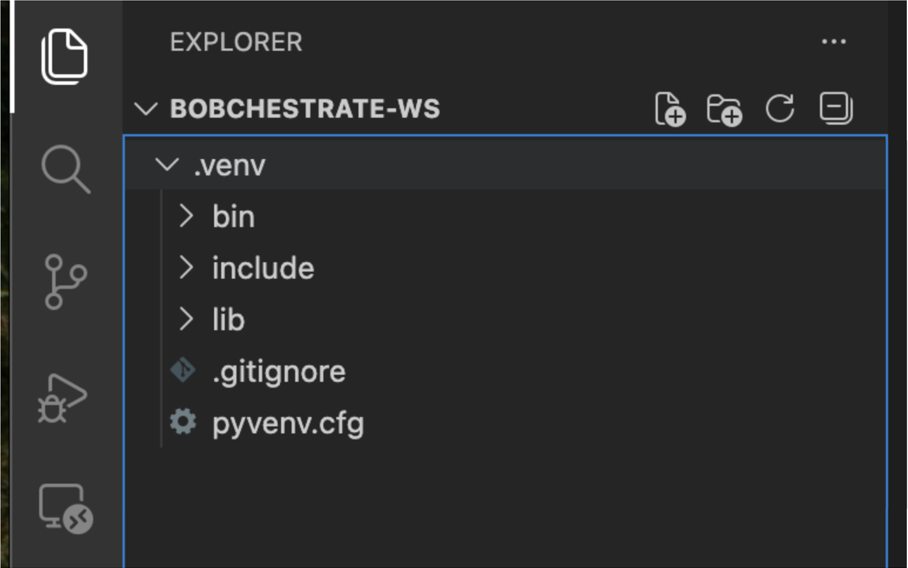
.venv folder appears in Bob's file panel on the left — that's your environment.Install the watsonx Orchestrate ADK
The Agent Development Kit (ADK) is the toolkit for building and testing agents. It installs as a Python package and gives you a command called orchestrate. These go in the terminal (not Bob's chat) — make sure you see (.venv) in your prompt first.
-
1
Install it with pip
pip install ibm-watsonx-orchestrateThis downloads a fair bit — give it a minute or two. Lots of text scrolling by is normal.
-
2
Confirm it installed
orchestrate --version -
✓
Checkpoint — ADK is installed
A version number prints (for example
1.x.x). Theorchestratecommand now works.
▶💡 Prefer clicking to typing? install the ADK from Bob's toolbar instead
Bob has a watsonx Orchestrate ADK extension that installs the toolkit with one click — no pip command. Two steps:
1. Open the Extensions view (the blocks icon in the left Activity Bar), search “watsonx Orchestrate”, and click Install on the ADK extension.
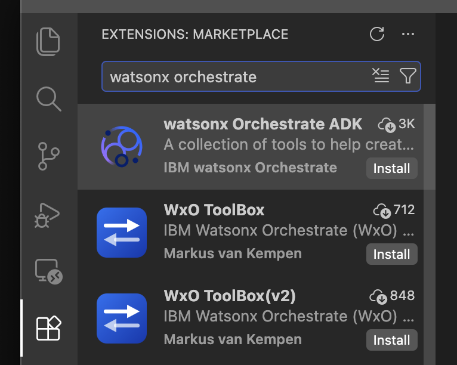
2. After it installs, look at the bottom status bar. A red ❌ ADK means it isn't installed yet — click it and choose the install option. Wait for it to turn into a green ✓ with a version number.
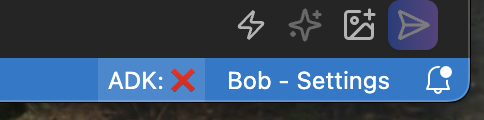
Either method gets you the same orchestrate command — use whichever you prefer.
▶⚠ Only if you see orchestrate: command not found
Your sandbox probably isn't on. Open a new terminal in Bob (it turns .venv on automatically) — check the prompt shows (.venv) — then run the version command again.
Give Bob the Orchestrate know-how
Before Bob writes any code, let's give it a cheat sheet. You'll connect Bob to IBM's official watsonx Orchestrate documentation server so it stops guessing and starts looking up the real, current syntax. This kind of connection is called an MCP server — think of it as a live reference book Bob can open mid-task. It's a one-time setup inside Bob's settings.
Without this, Bob writes agent code from memory and sometimes invents commands. With it, Bob can look up the exact ADK syntax and even list the tools and agents you've already created — so the files it writes in the next steps actually run.
-
1
Open Bob's MCP settings
Two ways to get there — use whichever you see:
- Click the gear / settings icon at the top of Bob's chat panel, or
- Click Bob Settings at the very bottom of the Bob panel.
In settings, open the MCP tab (sometimes labelled MCP Servers). This is where Bob keeps the list of reference servers it can connect to.
-
2
Choose this project, then open the config
Bob can save an MCP server in one of two places — and it matters which you pick:
- Global — the server turns on for every project you ever open in Bob.
- Project — the server lives inside this workshop folder only.
Click the + at the top-right of the MCP servers list. Bob pops up an Add MCP Server dialog with a Configuration Scope dropdown — open it and you'll see two choices: Global (All Workspaces) and your project, build-an-agent. Pick your project — we want the docs helper tied to this folder so it travels with the project and doesn't clutter the rest of your setup.
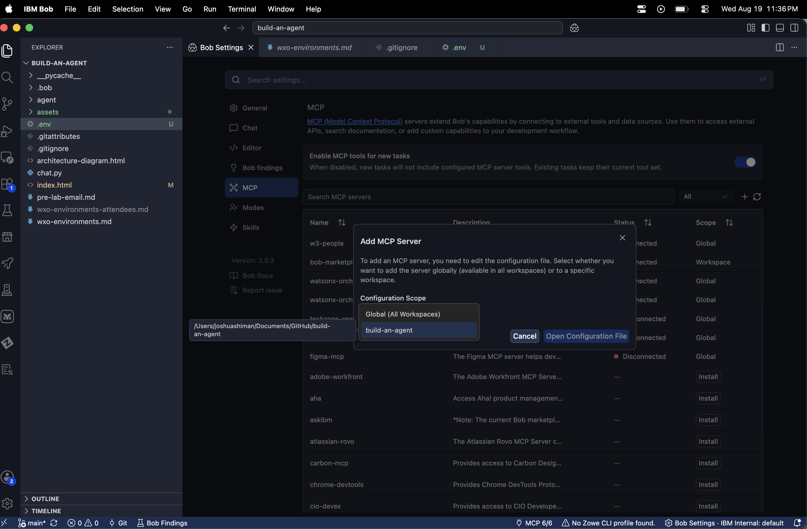
In the MCP tab, click + → set Configuration Scope to your project ( build-an-agent), not Global → Open Configuration File.Now click Open Configuration File. Bob opens a small config file — it looks like this, and may already have other servers in it (that's fine, leave them):
{ "mcpServers": { "bob-marketplace": { "type": "streamable-http", "url": "http://127.0.0.1:…" } } } -
3
Add the docs server — let Bob do it
The easy way: with the config file open, ask Bob in the chat to add it for you. Paste this request:
Add an MCP server named "watsonx-orchestrate-docs" to this project's MCP config. It's a remote streamable-http server at https://developer.watson-orchestrate.ibm.com/mcp . Keep the existing servers.Or add it by hand — put this entry inside the
mcpServersblock (add a comma after the previous server if there is one), then save:"watsonx-orchestrate-docs": { "type": "streamable-http", "url": "https://developer.watson-orchestrate.ibm.com/mcp" }When you save, if Bob asks you to approve or trust the server, click approve.
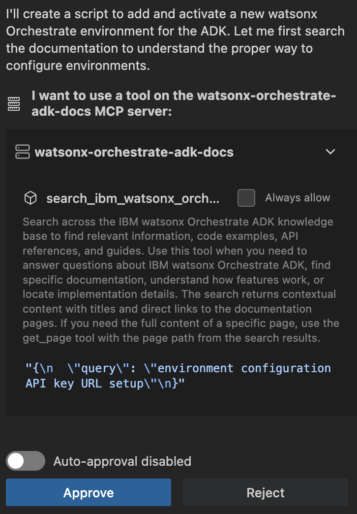
Approve the server when Bob asks the first time it connects. -
✓
Checkpoint — Bob can read the Orchestrate docs
Back in the MCP tab the server should show a green dot (connected). To be sure, ask Bob in the chat: “Search the watsonx Orchestrate docs — how do I create an agent with the ADK?” If it answers by citing the docs, you're set — the code it writes next will use real, current syntax.
▶💡 What did we just connect?
The address above is IBM's official watsonx Orchestrate Documentation MCP Server — a remote server IBM hosts. Because it's remote, there's nothing to install on your machine and no uv or Python setup needed for this step; Bob just talks to it over the web. It gives Bob a search tool over the current Orchestrate documentation.
▶💡 Optional the “WXO Agent Architect” mode
Some instructors also share a ready-made Bob mode called WXO Agent Architect — a version of Bob pre-briefed to always check the ADK docs and follow Orchestrate best practices. If yours provides the export file, import it via Command Palette → Modes → the Import icon → pick the .yaml file → choose WXO Agent Architect, then select it from the mode picker at the top of the chat.
This setup mirrors IBM's public Bobchestrate workshop, adapted for beginners.
Connect to watsonx Orchestrate
Your agent runs on a watsonx Orchestrate instance in the cloud. To reach it, the toolkit needs two things: a Service Instance URL and an API key. You'll grab both from a shared Box folder, store them once in a small .env file, and point the commands at it.
You'll create the .env file yourself here — don't ask Bob (it refuses to write API keys; the why is in step 2).
-
1
Get your URL and key from the Box folder
Open the shared workshop folder: ibm.box.com/v/internaldevday (password-protected — your instructor will give you the password). Inside, open the Box note with the environment credentials.
The note lists environments by last name. Find the row that matches your last name and copy the two values from it:
- your Service Instance URL (a long
https://api.ca-tor.watson-orchestrate.cloud.ibm.com/instances/…address), and - your API Key.
Please use only your assigned rowEveryone shares a pool of environments, so stick to the row for your last name so there's capacity for the whole room. If your name lands right on a boundary between two rows, either one is fine.
- your Service Instance URL (a long
-
2
Create the
.envfile by handDo this in Bob's Explorer — the file tree on the left. It works exactly like VS Code, so follow these clicks:
- Show the Explorer. If you don't see the file tree on the left, click the top-most icon in the narrow strip on the far left (the two stacked pages), or press ⌘⇧E (Windows/Linux: Ctrl⇧E). You should see your project folder,
event-planner-ws, at the top. - Start a new file. Hover over the project folder name — a little row of icons appears to its right. Click the New File icon (a page with a small +). A blank name box opens in the tree.
▶💡 Two other ways to make a new file
Right-click the project folder → New File…, or use the top menu bar: File → New File…. Any of the three is fine — pick whichever you spot first.
- Name it exactly
.env— start with the dot, with nothing before it (notenv, notmy.env). Press Enter. Bob opens the empty file in the editor. - Paste these two lines into the file, filling in your two values from the Box note (the whole Service Instance URL, and the API Key):
WXO_URL=<paste your Service Instance URL here> WXO_API_KEY=<paste your API Key here> - Save with ⌘S (Windows/Linux: CtrlS). Two lines, no quotes, no spaces around the
=. The dot on the editor tab turns back into an ✕ when it's saved.
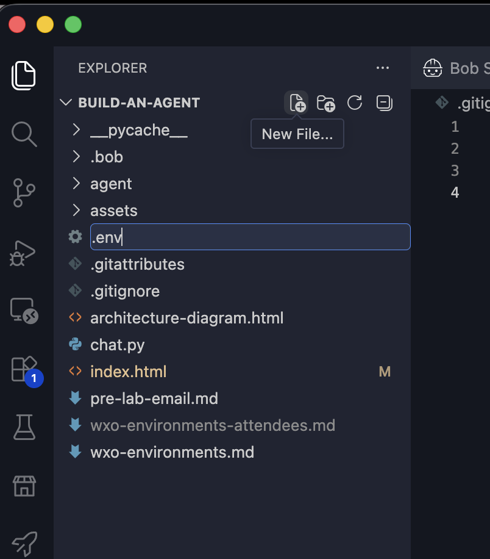
Creating the .envfile by hand in Bob's Explorer — hover the project folder and click the New File icon, then name it.env.▶💡 Why not just ask Bob?
If you ask Bob to write your key into
.env, it refuses with something like "Storing an API key directly in a.envfile that lives in your project root violates IBM security policy…" and instead creates a.env.examplefile with no real key in it. That's expected Bob behavior, not a bug — but it means the connect commands below would fail because your key isn't actually there. So for this one step, type the file by hand. (If you see a.env.exampleappear, you can ignore or delete it — you want.env.)▶💡 Is my key safe here?
.envis already listed in.gitignore, so it never gets committed or shared. Treat the key like a password — don't paste it into chat or screenshots. - Show the Explorer. If you don't see the file tree on the left, click the top-most icon in the narrow strip on the far left (the two stacked pages), or press ⌘⇧E (Windows/Linux: Ctrl⇧E). You should see your project folder,
-
3
Load the file, then register + connect
Run these in your terminal (this part is yours, not Bob's). The first line reads your
.env; the next two use those values without ever showing your key on screen:source .env orchestrate env add --name workshop --url "$WXO_URL" --type ibm_iam orchestrate env activate workshop --api-key "$WXO_API_KEY"source .env orchestrate env add --name workshop --url "$WXO_URL" --type ibm_iam orchestrate env activate workshop --api-key "$WXO_API_KEY"PowerShell loads the file a little differently. Run this once to read your
.env:Get-Content .env | ForEach-Object { if ($_ -match '^\s*([^#=]+)=(.*)$') { Set-Item "env:$($matches[1].Trim())" $matches[2].Trim() } }Then register and connect:
orchestrate env add --name workshop --url "$env:WXO_URL" --type ibm_iam orchestrate env activate workshop --api-key "$env:WXO_API_KEY"Heads up: one of these commands may ask you a yes/no follow-up in the terminal (for example, confirming it should overwrite or activate the environment). If it does, type
yand press Enter. The exact prompt can vary — say yes to continue. -
4
Test the connection
This lists the agents on the instance. A short or empty list is fine — it just means you're connected.
orchestrate agents list -
✓
Checkpoint — you're connected
You saw
Environment 'workshop' is now active, andorchestrate agents listran without an authentication error.
▶💡 Curious where the URL and key come from?
Your instructor generates these for you, so you don't need to — but for reference, they live in the Orchestrate console under your profile → Settings → API details. That page has a Generate API key button and the Service instance URL.
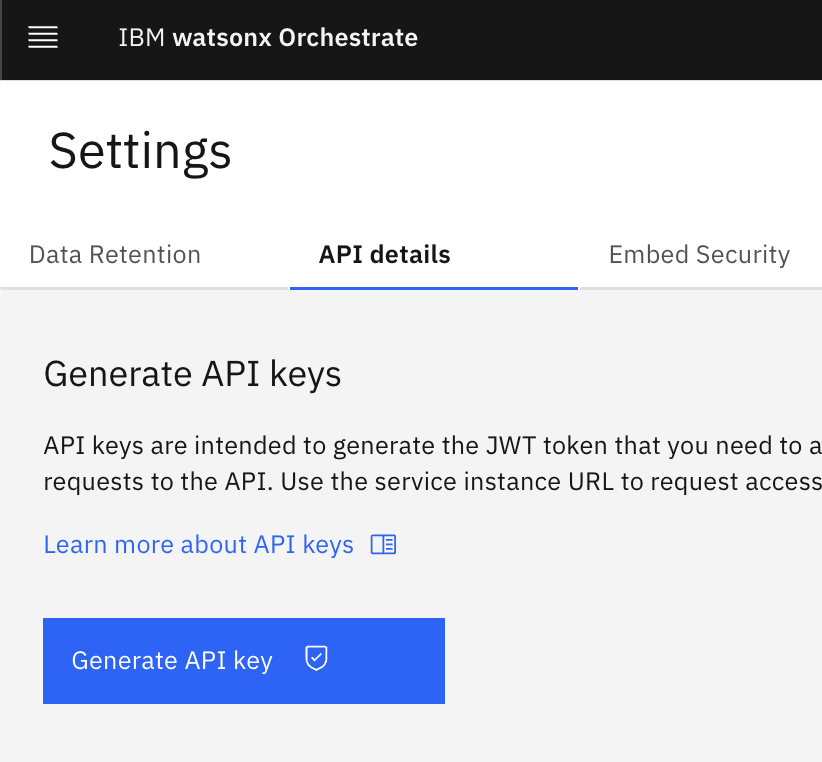
▶⚠ Only if commands start failing an hour or two later
The connection expires after about 2 hours. Because your key is saved in .env, reconnecting is quick — re-run the load + activate lines from Step 3:
source .env
orchestrate env activate workshop --api-key "$WXO_API_KEY"source .env
orchestrate env activate workshop --api-key "$WXO_API_KEY"Get-Content .env | ForEach-Object { if ($_ -match '^\s*([^#=]+)=(.*)$') { Set-Item "env:$($matches[1].Trim())" $matches[2].Trim() } }
orchestrate env activate workshop --api-key "$env:WXO_API_KEY"How an agent works
Quick breather — no typing here. Here's the whole idea in one sentence: an agent is a language model, plus instructions on how to behave, plus a set of tools it's allowed to use.
The part that surprises people: you never write “if the user asks about budget, call the budget tool.” You just describe each tool in plain English, and the model decides on its own when to call which one. That's what you're about to see.
Meet the Event Planner
We're building an assistant that helps plan any kind of event. It gets three tools:
Estimate budget
Given a guest count and event type, returns a cost breakdown.
Suggest venues
Given a city, guest count, and budget, returns venues that fit.
Manage guest list
Adds or removes people and keeps a running headcount.
Each tool is just a small Python function with a clear description. Let's write them.
The whole picture
Here's how the pieces you're about to build fit together — you build the agent in Bob, deploy it to watsonx Orchestrate, and a small chat.py on your laptop lets you talk to it. The model decides which of the three tools to call.
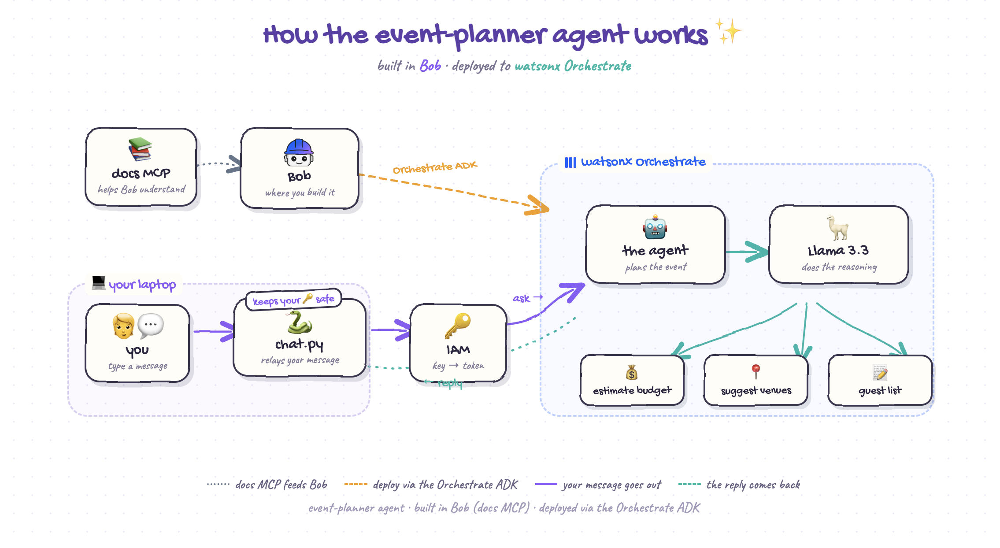
chat.py.Build the tools
Now the fun part — and here's where Bob earns its keep. Instead of typing three Python files by hand, you'll describe the tools to Bob and let it write them. The important idea to notice: each tool is a Python function with a plain-English docstring, and that description is what the AI reads to decide when to use the tool.
-
1
Ask Bob to build the three tools
Make sure Bob is in Agent mode (the mode picker sits at the top of the chat panel — Agent mode is the one allowed to create files). Then paste this into Bob's chat:
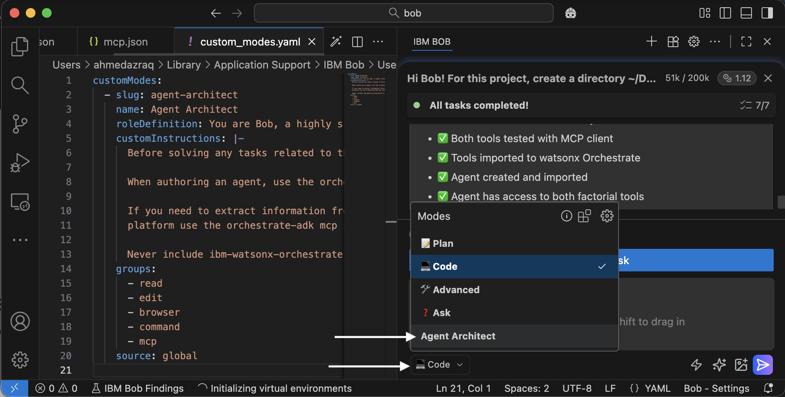
The mode picker sits at the top of Bob's chat panel. Pick a mode that can create files (Agent, or the Agent Architect mode if your instructor imported it). Create a folder called tools in my project. Inside it, create three Python files for watsonx Orchestrate custom tools. In each file, import the decorator with: from ibm_watsonx_orchestrate.agent_builder.tools import tool and decorate one function with @tool. Give each function a clear docstring saying when to use it and what its arguments are. 1) estimate_event_budget.py -- estimate_event_budget(num_guests: int, event_type: str) -> dict. Returns a cost breakdown (catering, drinks, decorations, entertainment, and venue) plus an estimated total in USD, using different per-guest costs for different event types. 2) suggest_venues.py -- suggest_venues(city: str, num_guests: int, max_budget: float) -> dict. Builds venue options from a small template list, keeps only the ones that fit the guest count and budget, and returns them cheapest first. 3) update_guest_list.py -- update_guest_list(current_guests: list, action: str, names: list) -> dict. Adds or removes names and returns the updated list and total count. It must be stateless: the caller passes the current list in every time.Bob creates the
toolsfolder and the three files, showing you each change to approve. Approve them, and watch the files appear in the file panel on the left.Bob will ask permissionAs Bob works, it may pop up an approval like the one below — for creating a file or using a tool. Click Approve (or Save) to let it continue. You can tick Always allow to stop being asked for the same thing.
A typical Bob approval prompt. Click Approve to let Bob keep going. -
2
Open each file and skim what Bob wrote
Click each file inside the
toolsfolder. You're looking for the@toolline and a clear docstring — that's what turns a plain function into a tool the agent can use. If a file looks off (or an import fails later), expand the answer key below and paste the exact version in.▶💡 Answer key the exact code, if you'd rather paste it in
tools/estimate_event_budget.pyfrom ibm_watsonx_orchestrate.agent_builder.tools import tool # Rough per-guest cost (USD) for each event type, by category. EVENT_COSTS = { "birthday party": {"catering": 25, "drinks": 10, "decorations": 8, "entertainment": 12}, "team offsite": {"catering": 40, "drinks": 12, "decorations": 5, "entertainment": 20}, "wedding": {"catering": 90, "drinks": 35, "decorations": 30, "entertainment": 45}, "conference": {"catering": 35, "drinks": 8, "decorations": 6, "entertainment": 15}, "casual gathering": {"catering": 15, "drinks": 8, "decorations": 4, "entertainment": 5}, } DEFAULT_COSTS = {"catering": 30, "drinks": 12, "decorations": 8, "entertainment": 15} @tool def estimate_event_budget(num_guests: int, event_type: str) -> dict: """Estimate a cost breakdown for an event based on guest count and event type. Use this tool whenever the user wants to know roughly how much an event will cost, or gives a guest count and an event type. Args: num_guests: The number of people expected to attend. event_type: The kind of event, for example "birthday party", "team offsite", "wedding", "conference", or "casual gathering". Returns: A dictionary with per-category costs and the estimated total in USD. """ per_guest = EVENT_COSTS.get(event_type.strip().lower(), DEFAULT_COSTS) breakdown = {cat: cost * num_guests for cat, cost in per_guest.items()} breakdown["venue"] = 300 + 15 * num_guests return { "event_type": event_type, "num_guests": num_guests, "breakdown_usd": breakdown, "estimated_total_usd": sum(breakdown.values()), }tools/suggest_venues.pyfrom ibm_watsonx_orchestrate.agent_builder.tools import tool # A small catalog of venue "templates" adapted to whatever city is asked about. VENUE_TEMPLATES = [ {"suffix": "Community Hall", "capacity": 40, "price": 500, "style": "simple and budget-friendly"}, {"suffix": "Rooftop Lounge", "capacity": 60, "price": 1500, "style": "trendy with skyline views"}, {"suffix": "Garden Pavilion", "capacity": 120, "price": 2500, "style": "outdoor and scenic"}, {"suffix": "Grand Ballroom", "capacity": 300, "price": 6000, "style": "elegant and formal"}, {"suffix": "Co-working Loft", "capacity": 30, "price": 800, "style": "modern, great for teams"}, ] @tool def suggest_venues(city: str, num_guests: int, max_budget: float) -> dict: """Suggest event venues in a city that fit the guest count and rental budget. Use this tool when the user wants venue ideas and has told you the city, roughly how many guests, and how much they can spend on the space. Args: city: The city to look for venues in. num_guests: The number of guests the venue must hold. max_budget: The maximum venue rental budget in USD. Returns: A dictionary with a list of matching venues, cheapest first. """ matches = [ { "name": f"The {city} {t['suffix']}", "capacity": t["capacity"], "price_usd": t["price"], "style": t["style"], } for t in VENUE_TEMPLATES if t["capacity"] >= num_guests and t["price"] <= max_budget ] matches.sort(key=lambda v: v["price_usd"]) if matches: msg = f"Found {len(matches)} venue(s) in {city} for {num_guests} guests under ${max_budget:.0f}." else: msg = f"No venues in {city} fit {num_guests} guests under ${max_budget:.0f}. Try a higher budget." return {"city": city, "message": msg, "venues": matches}tools/update_guest_list.pyfrom ibm_watsonx_orchestrate.agent_builder.tools import tool @tool def update_guest_list(current_guests: list, action: str, names: list) -> dict: """Add or remove names from an event guest list and return the updated list. This tool does not remember anything between calls: pass the current guest list in every time (use an empty list to start fresh). Use it whenever the user wants to add guests, remove guests, or count the people on the list. Args: current_guests: The guest names already on the list. Pass [] to start. action: What to do -- either "add" or "remove". names: The guest names to add or remove. Returns: A dictionary with the updated guest list and the total guest count. """ guests = list(current_guests) action = action.strip().lower() if action == "add": for name in names: if name not in guests: guests.append(name) elif action == "remove": guests = [g for g in guests if g not in names] else: return {"error": f"Unknown action '{action}'. Use 'add' or 'remove'.", "guest_list": guests, "total_guests": len(guests)} return {"guest_list": guests, "total_guests": len(guests)} -
3
Upload the tools to Orchestrate
This part is yours, not Bob's — uploading connects to your instance, so run it in the terminal. Run these one at a time (press Enter after each and wait for it to finish):
orchestrate tools import -k python -f tools/estimate_event_budget.py orchestrate tools import -k python -f tools/suggest_venues.py orchestrate tools import -k python -f tools/update_guest_list.py▶💡 Shortcut let Bob run the imports for you
If you gave Bob the Orchestrate know-how back in Step 6, you can let it do this. In the chat, ask:
Import all three tool files in my tools/ folder into watsonx Orchestrate using the ADK, then list the tools to confirm.Bob will run the same
orchestrate tools importcommands in its own terminal and show you the results. Approve the run when it asks. This works because your environment is already activated on this machine (Step 7) — Bob reuses that connection.Prefer to learn the commands? Just run them yourself above — both paths do exactly the same thing.
-
4
Check they all landed
orchestrate tools list -
✓
Checkpoint — three tools uploaded
All three —
estimate_event_budget,suggest_venues, andupdate_guest_list— appear in the list.
▶💡 Tip an import failed? Ask Bob
Copy the red error text, paste it into Bob's chat, and ask: "This orchestrate tools import command failed with this error — what's wrong?" Bob can usually spot a typo or missing line.
▶💡 Good to know you may see "Error getting Python tool status" — that's expected here
These workshop instances don't have the Python tool execution runtime enabled, so when the agent calls a tool it will wait, then time out after about 90 seconds. That won't break your demo: the agent's instructions tell it to fall back to its own knowledge once the tool is unavailable, so after the pause it still answers with a reasonable budget or venue suggestion on its own. Give it that ~90-second moment — it's the tool call timing out, not a crash.
The point of this step is to show how the agent decides to reach for a tool and wire it up. On a full Orchestrate instance with the runtime enabled, these same tools execute for real and return instantly — no changes to your agent needed.
Build the agent
The agent itself is a single file. It names the model, gives the instructions, and lists the three tools it's allowed to use.
-
1
Ask Bob to build the agent
With Bob still in Agent mode, paste this into the chat:
Create a file called event_planner.yaml in my project root. It should define a watsonx Orchestrate native agent (spec_version v1, kind native) named event_planner that uses the model groq/openai/gpt-oss-120b and style react_core, and lists my three tools: estimate_event_budget, suggest_venues, and update_guest_list. Write instructions telling it to be a friendly event-planning assistant: prefer the tools when they fit the request, but if a tool is unavailable or returns an error, answer helpfully from its own knowledge instead so the conversation always keeps moving. Ask one short clarifying question when missing a city, guest count, budget, or event type, and pass the full guest list back to update_guest_list so nothing is lost. Add a short welcome message and exactly three starter prompts. Give each starter prompt its own unique "id" field, and do NOT include an "is_default_prompts" field (it is not part of the schema).Approve the change, then open the new
event_planner.yamlto see what Bob wrote. -
2
Check the agent file
Skim it: the file names a model, lists your three tools, and gives instructions in plain English. That's the whole agent. If you'd rather drop in a known-good version, here it is:
▶💡 Answer key the exact
event_planner.yamlevent_planner.yamlspec_version: v1 kind: native name: event_planner description: > A friendly event-planning assistant that helps people plan gatherings. It can estimate a budget, suggest venues that fit the guest count and spend, and keep track of the guest list. llm: groq/openai/gpt-oss-120b style: react_core instructions: > You are a warm, practical event-planning assistant. You help users plan events such as birthday parties, team offsites, weddings, conferences, and casual gatherings. You have three tools you can use when they fit the request: - estimate_event_budget: for questions about cost, budget, or price for an event. Inputs: num_guests (integer) and event_type (string). - suggest_venues: for venue ideas or recommendations. Inputs: city (string), num_guests (integer), max_budget (number). - update_guest_list: for adding or removing guests. Inputs: current_guests (list, use [] to start), action ("add" or "remove"), names (list). Pass back the full guest list so nothing is lost between turns. Prefer a tool when one fits the request. If a tool is unavailable or returns an error, don't get stuck — answer helpfully from your own knowledge instead, giving a reasonable estimate or suggestion so the conversation always keeps moving forward. If you are missing an important detail, ask one short clarifying question. Keep your tone friendly and concise. tools: - estimate_event_budget - suggest_venues - update_guest_list welcome_content: welcome_message: "Hi! I'm your event planning assistant. 🎉" description: "I can estimate a budget, suggest venues, and manage your guest list — just tell me about your event." starter_prompts: prompts: - id: "estimate-budget" title: "Estimate a budget" subtitle: "See what an event might cost" prompt: "How much would a birthday party for 20 people cost?" - id: "find-venue" title: "Find a venue" subtitle: "Get venue ideas that fit your budget" prompt: "Suggest a venue in Toronto for 50 guests under $2000." - id: "build-guest-list" title: "Build a guest list" subtitle: "Add people to your event" prompt: "Start a guest list and add Sarah, Mike, and Priya." -
3
Rename your agent — required
Everyone is connecting to the same shared Orchestrate instance, so you must give your agent a unique name — otherwise you'll overwrite someone else's and won't be able to find your own.
In
event_planner.yaml, change thename:line to add your initials:name: event_planner_jsEither edit that line yourself, or tell Bob “rename the agent to
event_planner_js.” Use underscores, never dashes.Only thename:changes — not the filenameLeave the file itself named
event_planner.yaml. The filename only lives on your laptop, so it doesn't need your initials, and keeping it the same means the import command below works as-is. It's thename:inside the file that lands on the shared instance. -
4
Upload the agent
Back in the terminal — this connects to your instance, so it's yours to run:
orchestrate agents import -f event_planner.yaml▶💡 Shortcut let Bob import the agent for you
With the Orchestrate know-how from Step 6 connected, you can ask Bob to import it instead:
Import my event_planner.yaml agent into watsonx Orchestrate with the ADK, then list the agents to confirm it's there.Bob runs the import in its own terminal (approve when asked). Make sure you already did the rename in Step 3 — Bob imports whatever
name:is in the file, so the unique name still matters.Either path works the same — run it yourself above if you'd rather see the command.
-
✓
Checkpoint — agent created
You see
Agent '…' imported successfully(with your renamed agent), and it appears inorchestrate agents list.
▶💡 Note about the model line
The llm: line sets which model powers the agent. These workshop instances use groq/openai/gpt-oss-120b as the default model — use this value exactly. To confirm what models are available on your instance, run orchestrate models list.
Note on tool-calling behaviour: gpt-oss-120b often prefers to answer from its own knowledge rather than call a tool. For this workshop that's intentional — the agent's instructions let it fall back to its own knowledge when a tool isn't available, so you always get a helpful answer even though these instances can't execute the Python tools. On a full instance where the tools run, you'd strengthen the instructions to prefer tools more firmly.
Test your event planner
Time to talk to what you built. This opens a chat with your agent right in the terminal.
-
1
Start chatting
Use your renamed agent here (the one with your initials from Step 10):
orchestrate chat ask --agent-name event_planner_js -
2
Try a few messages
Type these in and watch which tool it decides to use each time:
- “How much would a wedding for 100 people cost?”
- “Find me a venue in Ottawa for 40 guests under $1000.”
- “Start a guest list with Alex and Jordan, then add Sam.”
Type
exitor press Ctrl+C to quit the chat. -
✓
Checkpoint — you built an agent! 🎉
Your agent answers using the tools you wrote. That's a real, working AI agent.
Make it yours
Change something in the instructions (for example, tell it to always suggest a theme), save the file, and re-import to see the new behavior:
orchestrate agents import -f event_planner.yaml▶💡 Tip let Bob iterate with you
Ask Bob: “Improve my agent's instructions so it always asks about dietary restrictions before estimating catering.” Then re-import and test the difference.
Give your agent a web chat
The terminal chat proves it works — now let's give your agent a real chat window in the browser, styled like a product. You'll run one small file, chat.py, that opens a web page and safely talks to Orchestrate for you using the URL and key already in your .env. No accounts, no extra setup.
-
1
Add
chat.pyto your projectchat.pyis in the shared workshop folder on Box: ibm.box.com/v/internaldevday (the same password-protected folder you got your credentials from in Step 7). Download it and save it into your project folder — the same folder as your.env. That's it; you don't need to edit it.▶💡 What is this file doing? (worth 30 seconds)
Your browser isn't allowed to call Orchestrate directly, and your API key must never sit inside a web page where anyone could read it. So
chat.pyruns on your machine: it keeps the key safe, swaps it for a short-lived token, and relays your messages to the agent and back. The web page only ever talks to your own little program.▶💡 Want to build it yourself? have Bob write
chat.pyfor youIf you'd rather not download the file, Bob can generate it. Paste this into Bob's chat — it already knows Orchestrate from the docs MCP you added in Step 6:
Create a chat.py in my project folder that serves a small web chat UI for my watsonx Orchestrate agent. It should: - Read WXO_URL and WXO_API_KEY from my .env (never expose the key to the browser) - Exchange the API key for a short-lived IAM token - List my deployed agents so I can pick one from a dropdown - Relay messages to the Orchestrate chat completions API and stream the reply back - Run a local server on http://localhost:3000 Keep it to one file with no extra dependencies beyond the standard library plus requests.Skim what Bob writes before running it, then continue with step 2 below. If anything misbehaves, just grab the ready-made
chat.pyfrom Box instead. -
2
Run it
You run this one yourself — it's a normal command you type in the terminal, not something you ask Bob to do. In your terminal inside Bob (Terminal → New Terminal), make sure you're in your project folder (the one with
.envandchat.py), then start it:python chat.pypython chat.pypython chat.pyIt prints
Chat is ready at http://localhost:3000. Leave this terminal running — it's your chat server. -
3
Open it and chat
Open http://localhost:3000 in your browser. Pick your agent from the dropdown at the top (the initials version you named in Step 10), then try the same kinds of questions:
- “Plan a 40-person team offsite in Austin.”
- “Estimate the budget for a 120-guest wedding.”
- “Suggest venues in Ottawa for 60 people under $8000.”
-
✓
Checkpoint — your agent has a face 🎉
You're chatting with the agent you built through a proper web interface. It's the exact same agent as the terminal — the page just calls Orchestrate's API for you. To stop the server later, press Ctrl+C in that terminal.
▶⚠ Only if the dropdown says “Could not load agents” or a message errors
Check these, in order:
- Is
chat.pystill running in the terminal? (You should see the “Chat is ready” line, not your normal prompt.) - Are you running it from the project folder that has your
.env? If it can't find.env, it says so and stops. - Refresh the browser tab once the server is up.
Still stuck? Flag a helper — it's usually a wrong folder or a stopped server.
▶⚠ Only if it says the address (port 3000) is already in use
Something else is using that port. Open chat.py, change the line near the top that reads PORT = 3000 to PORT = 3001, save, run it again, and open http://localhost:3001 instead.
▶⚠ Only if (Mac) you see SSL: CERTIFICATE_VERIFY_FAILED
On a Mac you may see a warning ending in SSL: CERTIFICATE_VERIFY_FAILED … unable to get local issuer certificate. The page still opens, but the agent dropdown stays empty. This just means your Python install hasn't loaded its root certificates yet.
Fix it once — run this in your terminal, then start chat.py again:
open /Applications/Python\ 3.*/Install\ Certificates.commandThat opens Python's bundled Install Certificates helper; let it finish, then re-run python chat.py and refresh the page. Your agents should now load.
Wrap-up & what's next
Look at what you just did: installed Python, an IDE, and a full agent toolkit from scratch, connected to a cloud AI platform, wrote three tools, and shipped an agent that reasons about when to use them. That's the whole loop — edit, import, chat.
Where to go from here
- Give it knowledge. Add a knowledge base so the agent can answer from documents you provide (Orchestrate's built-in RAG) — imagine an “event-planning tips” guide it can quote.
- Make it a team. Add a second agent — say, a catering specialist — and let the event planner hand off to it. That's multi-agent orchestration.
- Add a real tool. Swap the mock venue data for a real API call. The tool is just Python, so anything you can code, your agent can do.
Claim your certificate 🎉
You earned it. Here's your IBM Bob Champion certificate of recognition — personalized with your name:
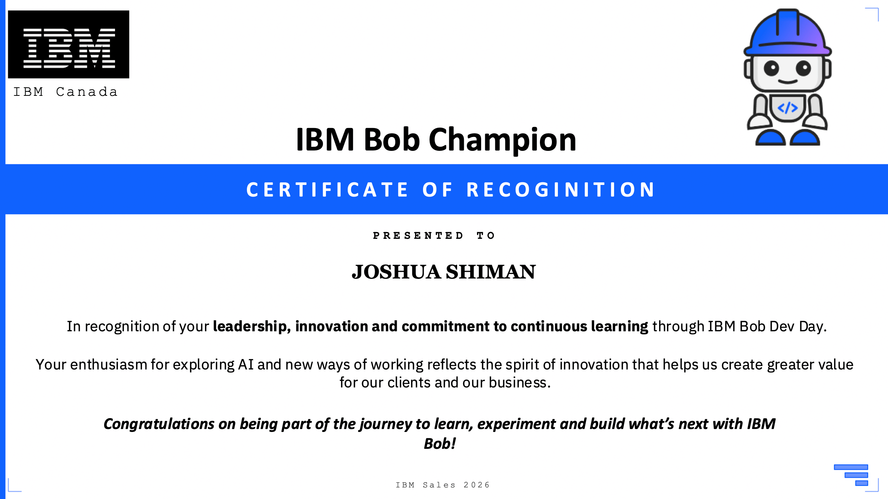
Proud of what you built? Post it — it helps others discover Bob and watsonx Orchestrate.
- LinkedIn: share a screenshot of your certificate (or your running agent) with a line about what you built. Tag #IBMBob, #watsonxOrchestrate, and #BuildAnAgent.
- Tell the story, not just the tool: “Today I went from an empty laptop to a working AI agent that plans events — here's what surprised me…” lands better than “I attended a workshop.”
- Tag IBM and your instructor/teammates so they can reshare, and drop a screenshot of the agent actually answering a question.
Everything you did here, Bob can help you extend. Describe what you want in plain language and iterate.
Troubleshooting
Most fixes are tucked into the step where you'd hit them (the grey “⚠ Only if…” bars). Here's the same list in one place.
▶FIX orchestrate: command not found
Your virtual environment isn't on. Open a new terminal in Bob (it turns on .venv automatically) — you should see (.venv) in the prompt. If it persists, reinstall: pip install --upgrade ibm-watsonx-orchestrate.
▶FIX “Authentication failed” or commands stopped working
The connection expires after ~2 hours. Reload your .env and re-activate — the exact per-OS commands are in the “⚠ Only if…” bar at the end of Step 07. Check your environments any time with orchestrate env list.
▶FIX Agent import fails with a validation error
Most often it's the name — agent names can't contain dashes, use underscores (event_planner). Ask Bob to check your YAML for syntax issues.
▶FIX Python / pip problems on Windows
If python opens the Microsoft Store, disable the App execution aliases (see Step 01). If a new terminal doesn't recognize Python, you likely missed “Add python.exe to PATH” during install — re-run the installer and tick it.
▶FIX Python won't run after installing on macOS
Make sure you opened a new terminal after installing. If python3 still fails, open Applications → Python 3.12 and double-click Update Shell Profile.command (and Install Certificates.command), then open a fresh terminal.
▶FIX python3 -m venv fails on Linux
The venv module isn't bundled on some distros. Install it, then retry Step 04: sudo apt install python3.12-venv (Ubuntu/Debian).
▶FIX The toolkit complains about the folder path
Check there are no spaces anywhere in your project folder's path. Move it to something like Documents/event-planner-ws if needed.
Still stuck? Flag a helper, or paste the exact error into Bob's chat and ask what to do.